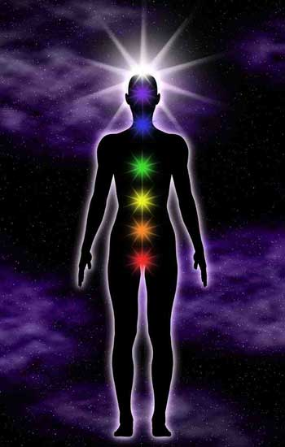

Energy: the concept | What is Energy?Energy is usually known as the strength and vitality required for sustained physical or mental activity. It is often times presumed to only be the capacity of power necessary for vigorous activity and is normally related to force and potency, as well as the zeal and push necessary to reach a certain goal.
Although energy is mostly considered a physical activity, as mentioned above, it is also a mental activity. Energy is a force within the supernatural dimension, which we need to channel and challenge in order to understand the natural states of being and the valuable elements that make up our lives and existence.
One of the greatest things about life is being able to watch it come to existence, grow and disintegrate. When it comes to understanding our hair’s growth and necessities, we need to know the sections of our bodies through which we release supernatural energy. The concept of energy can be further identified with the image on the background of this page. Our knowledge of the seven main energy centers (chakras) of the body grows through time, but this is a starting point for those interested in channeling the correct chakras when engaging in pronounced, accelerated hair growth.  What does each color represent?crown (bright light): spiritual third eye (voilet): perception throat (blue): expression |